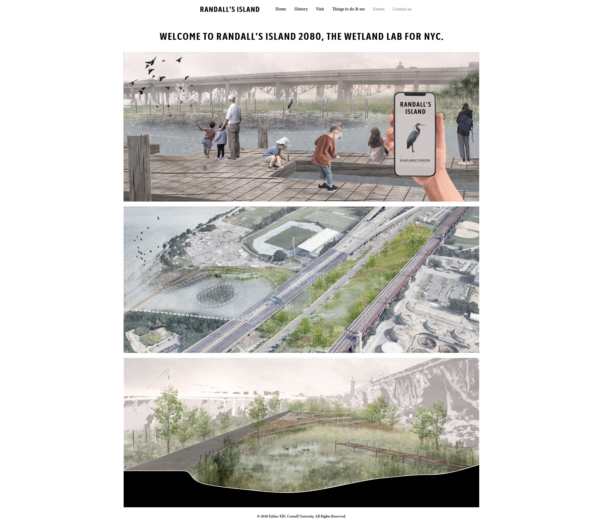

RANDALL'S ISLAND, NYC
Individual Project
Spring 2020
Climate-adaptive Design Studio, Cornell University
Instructor: Joshua Cerra
This project visions Randall’s Island, an island that at present provides space for various recreational activities for New York City, as the future civil wetland lab. As the sea level rises, the existing Little Hell Gate marsh will be submerged by 2100. To provide space for marsh migration and to situate urban ecological research into public space, the project creates a system of wetlands with two stages of adaptation. The project also provides a series of installations evolved from a standard that can accommodate different water levels and host various types of eco-systems. Researchers and the public are encouraged to engage with a great diversity of eco-systems as sea-level rise continuously changes the landscape.
Due to the COVID-19 pandemic, the project is presented virtually through the website: Randall’s Island 2080 . In 2080, visitors are invited to learn about the wetland system and research projects when navigating the island.
